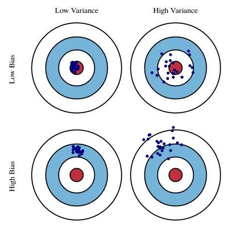

IAML Unit 1: Discussion (Tuesday/Thursday)
Course Overview
Introductions (preferred name, program/department and year; share name and pronouns in Slack)
Structure of course (after this short week)
- Blended course!!
- Same flow each week
- Week starts on Thursdays at 12:15 pm (end of Discussion meeting)
- Assignments include:
- Pre-recorded lectures
- Review of lecture slides (slide deck or book format)
- Readings (James et al. (2023) and other sources; All free)
- Application assignments (due following Friday at 8 pm)
- Asynchronous discussion and questions on Slack
- Lab section on Tuesdays at 11:00 am - address issues/questions with pending assignment
- Quiz due Wednesdays at 8 pm
- Wrap-up discussion and conceptual questions on Thursdays at 11 am. Not a lecture
- Self-paced (except for due dates and discussion)
- Quizzes used to encourage and assess reading. Also to guide discussion.
- Optional podcasts, videos and news articles to deepen understanding of the field
- Workload similar to 610
- Help
- Office hours
- John - Thursdays, 1:30 - 2:30 pm
- Chris - Thursdays, 12:30 - 1:30 pm
- Claire - Wednesdays, 11 - 12 pm
- Personal appointments & Slack
- The course website
- Primary source for all course materials
- Organized by units (with syllabus and course materials at front)
- Links to pre-recorded lectures, readings, and quiz on course materials page
- Lecture slides provided in slide deck and book formats (definitive source for code examples)
- Live discussions will be recorded and shared (along with slide deck)
- Slides/book provides primary source for code examples (all you need for this course)
- Readings are also quite important! (hence the weekly quizzes)
- Course as guided learning
- Concepts in lectures and readings
- Applications in slides, lab, and application assignment
- Discussion section is discussion/questions (not pre-planned lecture)
- Slack CAN be a good source for discussion and questions as well
- Grades are secondary (quizzes, application assignments, exams)
Why these tools?
Quarto?- Scientific publishing system (reproducible code, with output, presentations, papers)
- Tool for collaboration
- Interactive with static product (render to html or pdf)
- Application assignments, web book, and slides
tidyverse?- The tidyverse is an opinionated collection of R packages designed for data science. All packages share an underlying design philosophy, grammar, and data structures
- Unmatched for data wrangling, EDA, and data visualization
tidymodels?- Consistent interface to hundreds of statistical algorithms
- Under VERY active development
- Well-supported and documented (tidymodels.org)
- Be careful with other web documentation (often out of date)
Why me?
- Primary tools in our research program
- Model for progression from 610/710
- Can do AND can collaborate with CS and expert data scientists
Environment
- Safe and respectful
- VERY encouraging of questions, discussion, and tangents
- Have fun
- Accomodations and Complaints
Exams, Application Assignments and Quizzes
- Approximately weekly quizzes will be administered through Canvas and due each Wednesday at 8 pm (15% of grade)
- Approximately weekly application assignments will be submitted via Canvas and due each Friday at 8 pm (25% of grade)
- Midterm application/project exam due Friday, March 6th at 8 pm (15% of grade)
- Midterm concepts exam in class on Thursday, March 6th (15% of grade)
- Final concepts exam during finals week on Tuesday, May 5th from 11 - 12:15 (15% of grade)
- Final application exam due Friday, May 8th at noon (15% of grade)
ChatGPT and other LLMs
- Yay! useful tool in your workflow
- Use as tool (like Stack Overflow) for applications (application assignments, application questions on exams)
- Integrated into RStudio with github student account
- Check carefully - it can be wrong even when it looks right
- Keep code in tidyverse/models (LLMs won’t do this by default)
- Do NOT use for conceptual questions (quizzes, conceptual exam questions). This type of info needs to be in your head to be effective data scientist.
- Academic Integrity
- Do not cheat! Only you lose.
- No collaboration with classmates, peers, previous students on anything graded (including application assignments)
- All cheating reported to Department and Dean of Students. If application assignment or quizzes, zero on all of them because I can’t trust them. If exam, zero on exam.
Association vs. Prediction
We will start with discussion of Yarkoni and Westfall today. Continue and integrate ISL chapter on thursday
What follows today is mostly my notes on key topics from the paper! Not meant to be a lecture.
Question
What is the difference between association vs. prediction?
Association quantifies the relationship between variables within a sample (predictors-outcome).
Prediction requires using an established model to predict (future?) outcomes for new (“out-of-sample,”held-out”) participants.
Much research in psychology demonstrates association but calls it prediction!
Association (sometimes substantially) overestimates the predictive strength of our models
- Coefficients are derived to minimize SSE (or maximize \(R^2\)) in sample
- \(R^2\) from GLM (using one sample) indexes how well on average any GLM that is fit to a sample will account for variance in that sample when specific coefficients are estimated in the same sample they are evaluated
- \(R^2\) does NOT tell you how well a specific GLM (including its coefficients) will work with new data for prediction
- \(R^2\) itself is positively biased even as estimate of how well a sample specific GLM will predict in that sample (vs. adjusted \(R^2\) and other corrections)
Prediction requires:
Model trained/fit on data that does NOT include the participants/observations to be predicted (model already exists)
- training data (held-in sets)
- performance evaluated in held-out data (validation/test sets)
Predictors to be measured before outcome (for true prediction)
Consider how to make a lapse prediction for a new person when implementing prediction model
Prediction vs. Explanation
Goal of scientific psychology is to understand human behavior. It involves both explaining behavior (i.e., identifying causes) and predicting (yet to be observed) behaviors.
- We overemphasize explanatory goals in this department, IMO
Prediction focuses on questions about:
- Who, when, under what conditions, what can change outcome?
- typically used in applications/interventions but that is often goal of explanatory models too!
- Prediction models can provide insight or tests of explanatory theories (e.g., do causes actually predict in new data; variable importance)
Question
Examples of valuable prediction without explanation?
Can you have explanation without prediction?
- If we can’t predict something precisely, do we really understand it (is our explanation sufficient)?
- If there is a lot we don’t understand (lots of prediction error), our explanation understanding may be limited/wrong
Basic framework and terminology for machine learning
Question
Supervised vs. unsupervised machine learning?
Question
Supervised regression vs classification?
NOTE: We will not discuss reinforcement learning in this course
Data Generating Process
Question
What is a data generating process?
- \(Y = f(X) + \epsilon\)
- both function and Xs are generally unknown
- \(\hat{Y} = \hat{f}(X)\)
Question
Why do we estimate the data generating process?
Same as use of models in 610
- summarize/describe
- Predict outcomes (predict)
- test hypotheses about predictors (explain)
Cross Validation
Question
What is it and why do we do it?
Question
How are replication and cross-validation different?
Reducible vs. Irreducible error?
- Our predictions will have error
- You learned to estimate parameters in the GLM to minimize error in 610
- But error remained non-zero (in your sample and more importantly with same model in new samples) unless you perfectly estimated the DGP
- That error can be divided into two sources
- Irreducible error comes from measurement error in X, Y and missing X because predictors (causes) not measured.
- Irreducible without collecting new predictors and/or with new measures
- It places a ceiling on the performance of the best model you can develop with your available data
- Reducible error comes from mismatch between \(\hat{f}(X)\) and the true \(f(X)\).
- We can reduce this without new data.
- Just need better model (\(\hat{f}(X)\)).
- You didn’t consider this (much) in 610 because you were limited to one statistical algorithm (GLM) AND it didn’t have hyperparameters.
- You did reduce error by coding predictors (feature engineering) differently (interactions \(X1*X2\), polynomial terms \(X^2\), power transformations of X) This course will teach you methods to decrease reducible error (and validly estimate total error of that best model)
- We can reduce this without new data.
Question
What are the three general steps by which we estimate and evaluate the data generating process with a sample of data? Lets use all this vocabulary!
- Candidate model configurations
- Statistical algorithms
- Hyperparameters
- Features (vs. predictors?), feature matrix, feature engineering, recipe (tidymodels specific)
- Model fitting (training), selection, and evaluation
- Resampling techniques
- cross validation techniques (k-fold)
- boostrapping for cross validation
- Training, validation, and test sets (terms vary in literature!)
Bias-variance tradeoff
Question
What is underfitting, overfitting, bias, and variance?
Bias and variance are general concepts to understand during any estimation process
- Estimate mean, median, standard deviation
- Parameter estimates in GLM
- Estimate DGP - \(\hat{Y} = \hat{f}(X)\)
Conceptual example of bias-variance: Darts from Yarkoni and Westfall (2017)

Second Conceptual Example: Models to measure/estimate weight
- Acme Co. has a blueprint for making a scale
- Make lots of scales (models) from that blueprint
- Each scale/model is a little different (due to manufacturing differences) - variance
- All scales tend to overestimate weight a bit (design error) - bias
Bias - A deeper dive
Biased models are generally less complex models (i.e., underfit) than the data-generating process for your outcome
Biased models lead to errors in prediction because the model will systematically over- or under-predict outcomes (scores or probabilities) for specific values of predictor(s) (bad for prediction goals!)
Parameter estimates from biased models may over or under-estimate the true effect of a predictor (bad for explanatory goals!)
Question
Are GLMs biased models?
GLM parameter estimates are BLUE - best linear unbiased estimators if the assumptions of the GLM are met. Parameter estimates from any sample are unbiased estimates of the linear model coefficients for population model.
However, if DGP is not linear (i.e., that assumption is violated), the linear model will produce biased parameter estimates.
Bias seems like a bad thing (and it is but its not the only source of reducible error)
Both bias (due to underfitting) and variance (due to overfitting) are sources of (reducible) prediction errors (and imprecise/inaccurate parameter estimates). They are also often inversely related (i.e., the trade-off).
The world is complex. In many instances,
- We can’t perfectly represent the DGP
- We trade off a little bias for big reduction in variance to produce the most accurate predictions (and stable parameter estimates across samples for explanatory goals)
- Or we trade off a little variance (slightly more flexible model) to get a big reduction in bias
- Either way, we get models that predict well and may be useful for explanatory goals
Variance - A deeper dive
Question
Consider example p = n in general linear model. What happens in this situation? How is this related to overfitting and model flexibility?
The model will perfectly fit the sample data even when there is no relationship between the predictors and the outcome. e.g., Any two points can be fit perfectly with one predictor (line), any three points can be fit perfectly with two predictors (plane). This model will NOT predict well in new data. This model is overfit because n-1 predictors is too flexible for the linear model. You will fit the noise in the training data.
Factors that increase overfitting
- Small N
- Complex models (e.g, many predictors, p relative to n, non-parametric models)
- Weak effects of predictors (lots of noise available to overfit)
- Correlated predictors (for some algorithms like the GLM)
- Choosing between many model configurations (e.g. different predictors or predictor sets, transformations, types of statistical models) - lets return to this when we consider p-hacking
You might have noticed that many of the above factors contribute to the standard error of a parameter estimate/model coefficient from the GLM
- Small N
- Big p
- Small \(R^2\) (weak effects)
- Correlated predictors
The standard error increases as model overfitting increases due to these factors
Question
Explain the link between model variance/overfitting, standard errors, and sampling distributions?
All parameter estimates have a sampling distribution. This is the distribution of estimates that you would get if you repeatedly fit the same model to new samples.
When a model is overfit, that means that aspects of the model (its parameter estimates, its predictions) will vary greatly from sample to sample. This is represented by a large standard error (the SD of the sampling distribution) for the model’s parameter estimates.
It also means that the predictions you will make in new data will be very different depending on the sample that was used to estimate the parameters.
Question
Describe problem of p-hacking with respect to overfitting?
When you p-hack, you are overfitting the training set (your sample). You try out many, many different model configurations and choose the one you like best rather than what works well in new data. This model likely capitalizes on noise in your sample. It won’t fit well in another sample.
In other words, your conclusions are not linked to the true DGP and would be different if you used a different sample.
In a different vein, your significance test is wrong. The SE does not reflect the model variance that resulted from testing many different configurations b/c your final model didn’t “know” about the other models. Statistically invalid conclusion!
Parameter estimates from an overfit model are specific to the sample within which they were trained and are not true for other samples or the population as a whole
Parameter estimates from overfit models have big (TRUE) SE and so they may be VERY different in other samples
- Though if the overfitting is due to fitting many models, it won’t be reflected in the SE from any one model because each model doesn’t know the other models exist! p-hacking!!
With traditional (one-sample) statistics, this can lead us to incorrect conclusions about the effect of predictors associated with these parameter estimates (bad for explanatory goals!).
If the parameter estimates are very different sample to sample (and different from the true population parameters), this means the model will predict poorly in new samples (bad for prediction goals!). We fix this by using resampling to evaluate model performance.